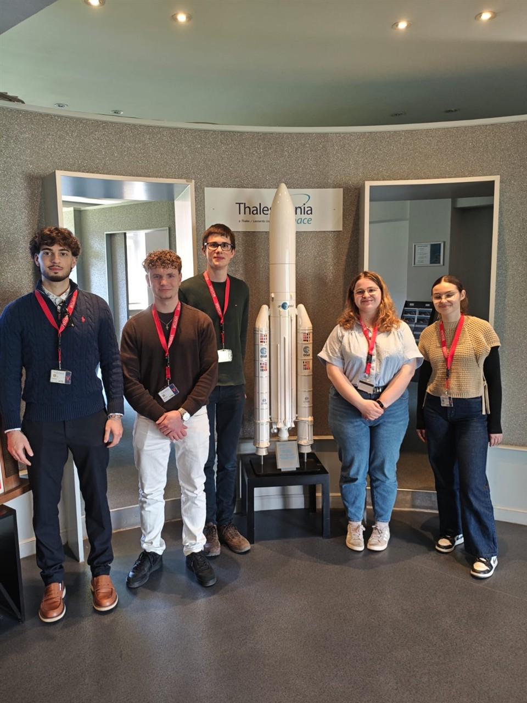

Cette photo a été prise le jour où mes amis et moi avons reçu notre diplôme à la FUCaM. Elle me rappelle aussi tout ce qui s’est passé avant qu’on se retrouve avec ce papier en main. Parmi les travaux de mon bachelier, il y en a deux que j’aurais encore envie de montrer à quelqu’un aujourd’hui : un projet pour l’hôpital de Tournai et une application pour un festival de cinéma.
La remise des diplômes, à Mons.
Pourquoi la supply chain ?
Au comptoir, quand un produit manque, le client le voit tout de suite. Moi, j’ai envie de remonter le fil de la commande.
La demandeQuelle quantité avait-on prévue ?
La commandeÀ quel moment fallait-il la passer ?
Le stockQui savait ce qu’il restait en rayon ?
Cette polyvalence m’a attiré vers la majeure en supply chain à la Louvain School of Management. J’aimerais pouvoir suivre une commande avec les personnes qui la préparent, regarder les données avec elles, puis revenir sur le terrain pour voir si le changement leur facilite la journée.

Lors de ma visite chez Thales Alenia Space.
Deux projets de mon bachelier
Projet entrepreneurial · Tournai
CHW’acti
Pendant un an, nous avons travaillé à six sur une question posée par le CHwapi de Tournai. Quel service l’hôpital pourrait-il proposer aux habitants du quartier ? Nous avons rencontré des riverains, puis visité le nouveau site avec notre mentor.
Avant la visite, on avait déjà quelques idées en tête. Une crèche, par exemple, ou un endroit où manger. Sur place, on a appris qu’une crèche et une sandwicherie étaient déjà prévues. En une visite, deux de nos pistes venaient de perdre leur intérêt. On s’est alors intéressés aux familles dont les enfants avaient déjà passé l’âge de la crèche.
C’est de là qu’est venu CHW’acti, notre projet d’espace d’activités pour les 6 à 12 ans. Ce que je garde de cette visite, c’est un réflexe assez simple : avant de passer des semaines à développer une idée, aller voir ce qui existe déjà et parler aux gens qui vont s’en servir.
Gestion de données · Microsoft Access
Festival FuCannes
Le ticket de cinéma qui accueille le visiteur dans notre application.
Quand on ouvre FuCannes, la première chose qu’on voit est un ticket de cinéma. Une fois entré dans l’application, on peut choisir une édition, retrouver ses films ou consulter le planning des salles. J’aime montrer cet écran parce qu’en quelques clics on comprend à quoi sert la base de données que nous avons construite.
La partie qui m’a demandé le plus d’investissement se voit beaucoup moins. Pour qu’une liste affiche les bons films, il faut d’abord décider comment relier un film, une projection, une salle et une édition. En travaillant sur ces liens, j’ai approfondi ma maîtrise d’Access et compris à quoi servent les requêtes SQL dans une application qu’une autre personne va utiliser.
J’ai consacré énormément de temps à ce projet. Alors oui, recevoir une très bonne note m’a fait plaisir. Mais ce que je peux encore vous montrer aujourd’hui, c’est le résultat de toutes ces heures : on entre dans le festival, on choisit une édition et on retrouve les films à l’écran. C’est pour ça que je suis particulièrement fier de FuCannes.
Découvrir le menu de notre applicationDepuis ce menu, on peut notamment consulter les films, le planning et le jury.Voir un exemple de requête du projet
Dans le formulaire des films, une liste déroulante permet de choisir l’édition du festival. La requête utilise ce choix pour afficher les films de l’édition sélectionnée. Nous en avons expliqué le fonctionnement à la page 20 de notre rapport.
Ce que j'emporte dans mon master
Mes connaissances
Ce que j’ai déjà
Bases de la gestion des stocks et du fonctionnement d’une base de données relationnelle.
Ce que je veux développer
Comprendre comment prévoir la demande et choisir un niveau de stock.
Ce que je peux faire
Comparer deux prévisions de vente et expliquer comment chacune modifierait la quantité à commander.
Mon savoir-faire
Ce que j’ai déjà
Structurer des données dans Excel, écrire une requête SQL et construire un indicateur de suivi.
Ce que je veux développer
Analyser un processus pour repérer l’étape qui ralentit le travail.
Ce que je peux faire
Représenter les étapes d’une commande, mesurer les temps d’attente et proposer un changement à tester.
Mon savoir-être
Ce que j’ai déjà
Sens de l’organisation, esprit d’initiative et fiabilité.
Ce que je veux développer
Prendre la parole avec plus d’assurance en anglais, surtout en réunion.
Ce que je peux faire
Préparer une idée en quelques mots, la proposer au groupe et demander aux autres ce qu’ils en pensent.
Ce dont j’aimerais être fier
Le jour de mon diplôme, j’aimerais pouvoir vous raconter un projet que j’aurais trouvé trop difficile au début du master. FuCannes m’a déjà fait vivre quelque chose comme ça. J’y ai passé énormément de temps, et aujourd’hui je peux vous montrer une base de données que j’ai contribué à construire. C’est dans ce sens-là que j’ai envie de continuer à me dépasser.